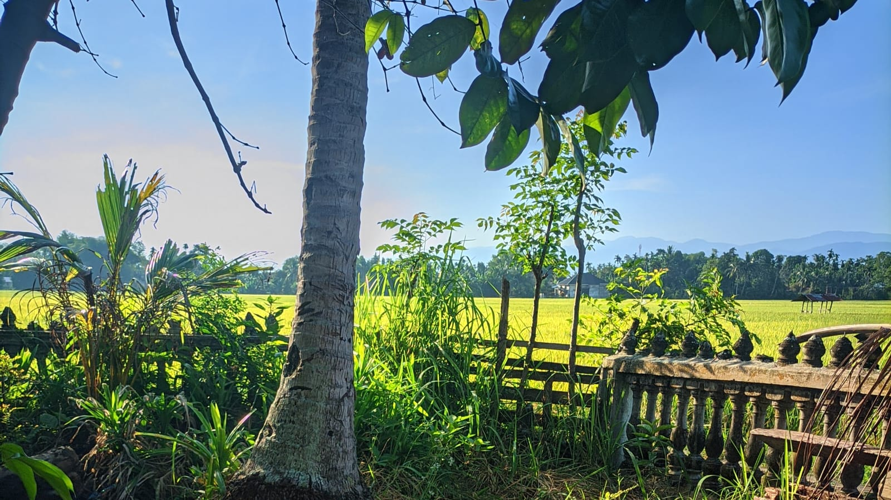
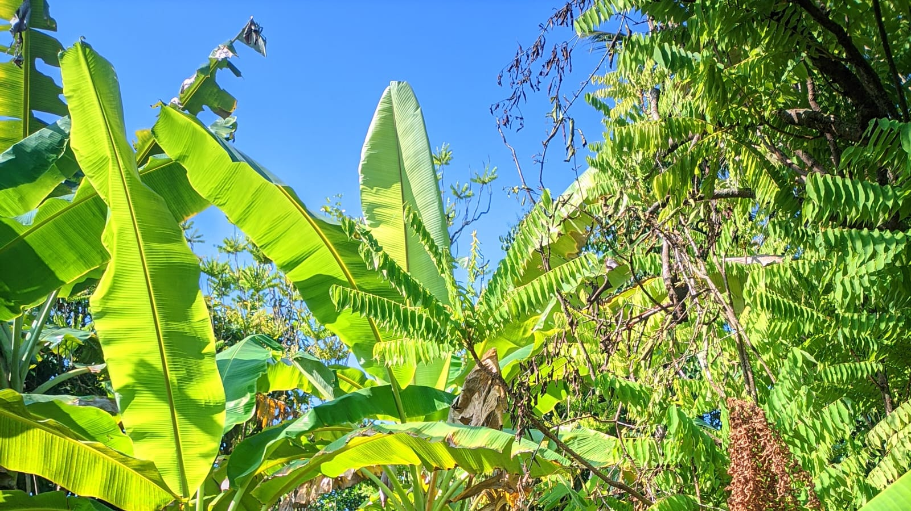
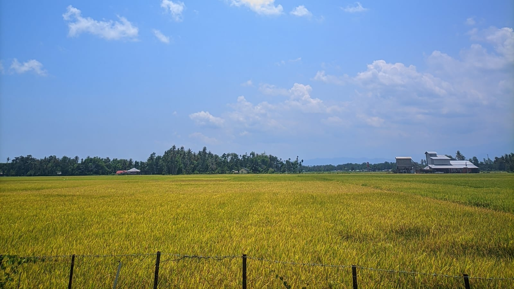

Desa yang asri dengan keindahan alam persawahan dan rawa-rawa yang menjadi warisan leluhur dan sumber kehidupan masyarakat.
Sambutan Kepala Desa
Desa Bluek Lamkabu hadir dengan semangat gotong royong, kearifan lokal, dan keindahan alam yang tak ternilai. Kami berkomitmen untuk terus berkembang demi kesejahteraan seluruh warga.
Bersama-sama kita wujudkan desa yang maju, mandiri, dan berdaya guna bagi generasi mendatang.
Data terkini mengenai kependudukan dan wilayah Desa Bluek Lamkabu tahun 2025.
Potret kehidupan alam dan keseharian masyarakat Desa Bluek Lamkabu yang damai dan asri.



Desa Bluek Lamkabu terletak di wilayah Kabupaten Pidie, Provinsi Aceh, dengan akses yang mudah dari pusat kota.